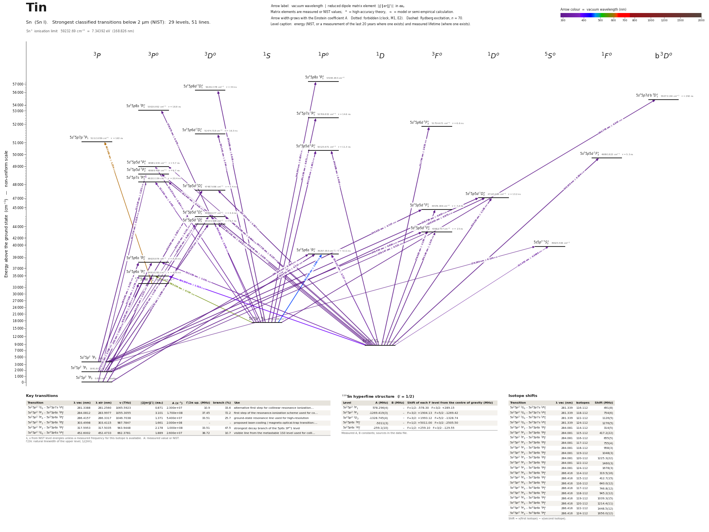

Tin energy level diagram
Energy levels and transitions of neutral tin (Sn I): the 51 strongest classified lines below 2 µm from the NIST Atomic Spectra Database and the 29 levels they connect, each line with its vacuum wavelength, frequency and, for 51 of them, the reduced dipole matrix element derived from the NIST transition rate. Measured lifetimes, transition rates, hyperfine constants and isotope shifts from the literature are included, each with its citation.
Hover a line or a level to isolate it, click to keep it selected. Scroll to zoom, drag to move.

Download: diagram (PDF) diagram (SVG) transitions (CSV) levels (CSV) source code

Key transitions of tin
| Transition | λ vac (nm) | λ air (nm) | ν (THz) | |⟨J‖er‖J′⟩| (ea₀) | A (s⁻¹) | Γ/2π up. (MHz) | branch (%) | Use |
|---|---|---|---|---|---|---|---|---|
| 5s25p2 1S0 – 5s25p7s 1P°1 | 281.3388 | 281.2560 | 1065.5923 | 0.871 | 2.300e+07 | 10.9 | 33.6 | alternative first step for collinear resonance ionization… |
| 5s25p2 3P2 – 5s25p6s 3P°2 | 284.0812 | 283.9977 | 1055.3055 | 3.101 | 1.700e+08 | 37.45 | 72.2 | first step of the resonance-ionization scheme used for co… |
| 5s25p2 3P0 – 5s25p6s 3P°1 | 286.4157 | 286.3317 | 1046.7038 | 1.371 | 5.400e+07 | 33.51 | 25.7 | ground-state resonance line used for high-resolution |
| 5s25p2 3P1 – 5s25p6s 3P°0 | 303.4998 | 303.4115 | 987.7847 | 1.661 | 2.000e+08 | – | – | proposed laser-cooling / magneto-optical-trap transition:… |
| 5s25p2 3P2 – 5s25p6s 3P°1 | 317.5953 | 317.5035 | 943.9448 | 2.178 | 1.000e+08 | 33.51 | 47.5 | strongest decay branch of the 5p6s 3P°1 level |
| 5s25p2 1S0 – 5s25p6s 1P°1 | 452.6002 | 452.4733 | 662.3781 | 1.889 | 2.600e+07 | 38.72 | 10.7 | visible line from the metastable 1S0 level used for colli… |
λ, ν from NIST level energies unless a measured frequency for this isotope is available. A: measured value or NIST. Γ/2π: natural linewidth of the upper level, 1/(2πτ).
119Sn hyperfine structure (I = 1/2)
| Level | A (MHz) | B (MHz) | Shift of each F level from the centre of gravity (MHz) |
|---|---|---|---|
| 5s25p2 3P1 | 578.296(4) | – | F=1/2: -578.30 F=3/2: +289.15 |
| 5s25p2 3P2 | -1269.419(3) | – | F=3/2: +1904.13 F=5/2: -1269.42 |
| 5s25p2 1D2 | -1328.745(4) | – | F=3/2: +1993.12 F=5/2: -1328.74 |
| 5s25p6s 3P°1 | -5011(3) | – | F=1/2: +5011.00 F=3/2: -2505.50 |
| 5s25p6s 1P°1 | -259.1(10) | – | F=1/2: +259.10 F=3/2: -129.55 |
Measured A, B constants; sources in the data file.
Isotope shifts
| Transition | λ vac (nm) | Isotopes | Shift (MHz) |
|---|---|---|---|
| 5s25p2 1S0 – 5s25p7s 1P°1 | 281.339 | 116-112 | 491(8) |
| 5s25p2 1S0 – 5s25p7s 1P°1 | 281.339 | 118-112 | 754(6) |
| 5s25p2 1S0 – 5s25p7s 1P°1 | 281.339 | 122-112 | 1126(5) |
| 5s25p2 1S0 – 5s25p7s 1P°1 | 281.339 | 124-112 | 1276(5) |
| 5s25p2 3P2 – 5s25p6s 3P°2 | 284.081 | 114-112 | 314(5) |
| 5s25p2 3P2 – 5s25p6s 3P°2 | 284.081 | 115-112 | 417.2(22) |
| 5s25p2 3P2 – 5s25p6s 3P°2 | 284.081 | 116-112 | 655(5) |
| 5s25p2 3P2 – 5s25p6s 3P°2 | 284.081 | 117-112 | 755(4) |
| 5s25p2 3P2 – 5s25p6s 3P°2 | 284.081 | 118-112 | 958(3) |
| 5s25p2 3P2 – 5s25p6s 3P°2 | 284.081 | 119-112 | 1048(3) |
| 5s25p2 3P2 – 5s25p6s 3P°2 | 284.081 | 120-112 | 1225.3(22) |
| 5s25p2 3P2 – 5s25p6s 3P°2 | 284.081 | 122-112 | 1460(3) |
| 5s25p2 3P2 – 5s25p6s 3P°2 | 284.081 | 124-112 | 1678(3) |
| 5s25p2 3P0 – 5s25p6s 3P°1 | 286.416 | 114-112 | 319.5(16) |
| 5s25p2 3P0 – 5s25p6s 3P°1 | 286.416 | 115-112 | 412.7(15) |
| 5s25p2 3P0 – 5s25p6s 3P°1 | 286.416 | 116-112 | 640.0(12) |
| 5s25p2 3P0 – 5s25p6s 3P°1 | 286.416 | 117-112 | 746.8(12) |
| 5s25p2 3P0 – 5s25p6s 3P°1 | 286.416 | 118-112 | 945.2(12) |
| 5s25p2 3P0 – 5s25p6s 3P°1 | 286.416 | 119-112 | 1039.3(15) |
| 5s25p2 3P0 – 5s25p6s 3P°1 | 286.416 | 120-112 | 1214.4(11) |
| 5s25p2 3P0 – 5s25p6s 3P°1 | 286.416 | 122-112 | 1448.5(12) |
| 5s25p2 3P0 – 5s25p6s 3P°1 | 286.416 | 124-112 | 1656.0(12) |
Shift = ν(first isotope) − ν(second isotope).
Closed and nearly closed transitions of tin
| Transition | λ vacuum (nm) | Lower level | A (s⁻¹) | Leak per scattered photon | Photons before a leak | Where the leak goes |
|---|---|---|---|---|---|---|
| 5s25p2 3P1 → 5s25p6s 3P°0 | 303.4998 | metastable | 2.000e+08 NIST | closed | – | no other level can be reached by electric-dipole decay |
| 5s25p2 1D2 → 5s25p6d 3F°3 | 231.7942 | metastable | 2.000e+08 NIST | ≥ 1.53 % from this site's HFR fit | ≤ 65 | 5s25p6p 3P2 ≈ 1.22 %; 5s25p6p 3D3 ≈ 0.206 %; 5s25p6p 1D2 ≈ 0.121 %; 3 more possible paths without a listed rate |
| 5s25p2 3P1 → 5s25p5d 3D°2 | 235.5570 | metastable | 1.700e+08 NIST | ≥ 7.16 % from this site's HFR fit | ≤ 14 | 5s25p2 1D2 6.84 % (long-lived); 5s25p2 3P2 0.627 % (long-lived); 5s25p6p 3D1 ≈ 4.77 × 10−5; 2 more possible paths without a listed rate |
A transition is closed when its upper level can decay only to the level it was excited from, so the atom keeps scattering photons. “closed”: among the levels NIST lists, no other level below the upper level has the opposite parity and |ΔJ| ≤ 1, so no other electric-dipole decay exists. Otherwise the leak is the sum of the branching ratios of the other decay lines of the upper level (or 1 − branching ratio where that of the line itself has been measured), and the number of photons is 1 / leak. “≥” and “≤”: at least one possible decay path has no listed rate, so the leak is a lower limit. These numbers are derived from the branching ratios, lifetimes and rates of this page, not measured as such; the tag names the weakest of the inputs, * marks theory and ≈ a model or semi-empirical calculation. Listed: lines that start on the ground level or on a metastable level and leak at most 10 %, unless more than three possible decay paths have no listed rate. Fine-structure levels only: hyperfine and Zeeman dark states and forbidden decays without a listed rate are not considered. Select a line in the diagram for the full list of its leak channels.
Listed Sn transitions below 2 µm
| Lower level | Upper level | λ vacuum (nm) | λ air (nm) | ν (THz) | Type | |⟨J‖er‖J′⟩| (ea₀) | A (s⁻¹) | Branching (%) | Source of matrix element / A |
|---|---|---|---|---|---|---|---|---|---|
| 5s25p2 3P0 | 5s25p7s 3P°1 | 207.3735 | 207.3074 | 1445.6640 | E1 | 0.218 NIST | 3.600e+06 NIST | 7.34 | NIST ASD (accuracy D) |
| 5s25p2 3P1 | 5s25p5d 1D°2 | 220.0032 | 219.9346 | 1362.6730 | E1 (intercombination) | 0.873 NIST | 2.900e+07 NIST | 38.3 | NIST ASD (accuracy D) |
| 5s25p2 3P2 | 5s25p5d 3P°2 | 221.0348 | 220.9660 | 1356.3131 | E1 | 1.222 NIST | 5.600e+07 NIST | 37.5 | NIST ASD (accuracy D) |
| 5s25p2 3P0 | 5s25p5d 3D°1 | 224.6753 | 224.6056 | 1334.3366 | E1 | 1.639 NIST | 1.600e+08 NIST | 73.6 | NIST ASD (accuracy D) |
| 5s25p2 3P2 | 5s25p5d 3D°3 | 226.9631 | 226.8930 | 1320.8863 | E1 | 2.202 NIST | 1.200e+08 NIST | 88.8 | NIST ASD (accuracy D) |
| 5s25p2 3P2 | 5s25p5d 1D°2 | 228.7387 | 228.6681 | 1310.6330 | E1 (intercombination) | 0.957 NIST | 3.100e+07 NIST | 40.9 | NIST ASD (accuracy D) |
| 5s25p2 1D2 | 5s25p6d 3F°3 | 231.7942 | 231.7230 | 1293.3561 | E1 (intercombination) | 2.933 NIST | 2.000e+08 NIST | 100 | NIST ASD (accuracy D) |
| 5s25p2 3P1 | 5s25p5d 3D°1 | 233.5528 | 233.4812 | 1283.6175 | E1 | 1.116 NIST | 6.600e+07 NIST | 30.4 | NIST ASD (accuracy D) |
| 5s25p2 3P1 | 5s25p5d 3D°2 | 235.5570 | 235.4850 | 1272.6958 | E1 | 2.342 NIST | 1.700e+08 NIST | 96.9 | NIST ASD (accuracy D) |
| 5s25p2 3P1 | 5s25p5d 3F°2 | 238.1467 | 238.0740 | 1258.8564 | E1 | 0.321 NIST | 3.100e+06 NIST | 7.13 | NIST ASD (accuracy D) |
| 5s25p2 1D2 | 5s25p5d 1P°1 | 240.8883 | 240.8151 | 1244.5289 | E1 | 0.610 NIST | 1.800e+07 NIST | 20.3 | NIST ASD (accuracy D) |
| 5s25p2 1D2 | 5s25p5d 1F°3 | 242.2430 | 242.1694 | 1237.5693 | E1 | 3.504 NIST | 2.500e+08 NIST | 100 | NIST ASD (accuracy D) |
| 5s25p2 3P2 | 5s25p5d 3F°3 | 243.0232 | 242.9495 | 1233.5960 | E1 | 2.727 NIST | 1.500e+08 NIST | 100 | NIST ASD (accuracy C) |
| 5s25p2 3P2 | 5s25p5d 3D°1 | 243.4215 | 243.3477 | 1231.5775 | E1 | 0.131 NIST | 8.000e+05 NIST | 0.368 | NIST ASD (accuracy D) |
| 5s25p2 3P2 | 5s25p5d 3D°2 | 245.5995 | 245.5252 | 1220.6558 | E1 | 0.201 NIST | 1.100e+06 NIST | 0.627 | NIST ASD (accuracy D) |
| 5s25p2 1D2 | 5s25p5d 3P°1 | 247.7150 | 247.6401 | 1210.2315 | E1 (intercombination) | 0.157 NIST | 1.100e+06 NIST | 0.627 | NIST ASD (accuracy D) |
| 5s25p2 3P2 | 5s25p5d 3F°2 | 248.4160 | 248.3410 | 1206.8165 | E1 | 0.891 NIST | 2.100e+07 NIST | 48.3 | NIST ASD (accuracy D) |
| 5s25p2 1S0 | 5s25p8s 1P°1 | 249.2451 | 249.1699 | 1202.8019 | E1 | 0.624 NIST | 1.700e+07 NIST | – | NIST ASD (accuracy D) |
| 5s25p2 1D2 | 5s25p5d 3P°2 | 249.6477 | 249.5724 | 1200.8623 | E1 (intercombination) | 1.543 NIST | 6.200e+07 NIST | 41.5 | NIST ASD (accuracy D) |
| 5s25p2 1D2 | 5s25p7s 3P°1 | 252.4666 | 252.3907 | 1187.4541 | E1 (intercombination) | 0.420 NIST | 7.400e+06 NIST | 15.1 | NIST ASD (accuracy D) |
| 5s25p2 3P0 | 5s25p6s 1P°1 | 254.7313 | 254.6548 | 1176.8968 | E1 (intercombination) | 0.717 NIST | 2.100e+07 NIST | 8.63 | NIST ASD (accuracy D) |
| 5s25p2 1S0 | 5s25p8d 3D°1 | 255.8862 | 255.8094 | 1171.5853 | E1 (intercombination) | 0.918 NIST | 3.400e+07 NIST | 100 | NIST ASD (accuracy D) |
| 5s25p2 1D2 | 5s25p5d 3D°3 | 257.2364 | 257.1594 | 1165.4354 | E1 (intercombination) | 1.627 NIST | 4.500e+07 NIST | 33.3 | NIST ASD (accuracy D) |
| 5s25p2 1D2 | 5s25p5d 1D°2 | 259.5196 | 259.4421 | 1155.1822 | E1 | 1.138 NIST | 3.000e+07 NIST | 39.6 | NIST ASD (accuracy D) |
| 5s25p2 1S0 | 5s25p7d b 3D°1 | 263.7778 | 263.6992 | 1136.5340 | E1 (intercombination) | 0.547 NIST | 1.100e+07 NIST | 100 | NIST ASD (accuracy D) |
| 5s25p2 3P1 | 5s25p6s 1P°1 | 266.2035 | 266.1243 | 1126.1778 | E1 (intercombination) | 0.554 NIST | 1.100e+07 NIST | 4.52 | NIST ASD (accuracy D) |
| 5s25p2 3P1 | 5s25p6s 3P°2 | 270.7307 | 270.6505 | 1107.3455 | E1 | 1.798 NIST | 6.600e+07 NIST | 28.1 | NIST ASD (accuracy D) |
| 5s25p2 3P2 | 5s5p3 5S°2 | 276.2596 | 276.1780 | 1085.1837 | E1 (intercombination) | 0.139 NIST | 3.700e+05 NIST | – | NIST ASD (accuracy D) |
| 5s25p2 1D2 | 5s25p5d 3F°3 | 278.0632 | 277.9811 | 1078.1452 | E1 (intercombination) | 1.156 NIST | 1.800e+07 NIST | 13.1 | NIST ASD (accuracy D) |
| 5s25p2 1D2 | 5s25p5d 3D°1 | 278.5847 | 278.5026 | 1076.1267 | E1 (intercombination) | 0.669 NIST | 1.400e+07 NIST | 6.44 | NIST ASD (accuracy D) |
| 5s25p2 1S0 | 5s25p8s 3P°1 | 278.8743 | 278.7920 | 1075.0094 | E1 (intercombination) | 0.670 NIST | 1.400e+07 NIST | 26.3 | NIST ASD (accuracy D) |
| 5s25p2 1S0 | 5s25p7s 1P°1 | 281.3388 | 281.2560 | 1065.5923 | E1 | 0.871 NIST | 2.300e+07 NIST | 33.6 | NIST ASD (accuracy D) |
| 5s25p2 1D2 | 5s25p5d 3D°2 | 281.4411 | 281.3582 | 1065.2050 | E1 (intercombination) | 0.812 NIST | 1.200e+07 NIST | 6.84 | NIST ASD (accuracy D) |
| 5s25p2 3P2 | 5s25p6s 3P°2 | 284.0812 | 283.9977 | 1055.3055 | E1 | 3.101 NIST | 1.700e+08 NIST | 72.2 | NIST ASD (accuracy D) |
| 5s25p2 1D2 | 5s25p5d 3F°2 | 285.1458 | 285.0620 | 1051.3656 | E1 (intercombination) | 1.374 NIST | 3.300e+07 NIST | 75.9 | NIST ASD (accuracy D) |
| 5s25p2 3P0 | 5s25p6s 3P°1 | 286.4157 | 286.3317 | 1046.7038 | E1 | 1.371 NIST | 5.400e+07 NIST | 25.7 | NIST ASD (accuracy D) |
| 5s25p2 1S0 | 5s25p6d 3D°1 | 291.4414 | 291.3560 | 1028.6544 | E1 (intercombination) | 1.744 NIST | 8.300e+07 NIST | 100 | NIST ASD (accuracy D) |
| 5s25p2 3P1 | 5s25p6s 3P°1 | 301.0010 | 300.9134 | 995.9848 | E1 | 1.239 NIST | 3.800e+07 NIST | 18.1 | NIST ASD (accuracy D) |
| 5s25p2 1S0 | 5s25p5d 1P°1 | 303.3661 | 303.2778 | 988.2200 | E1 | 1.601 NIST | 6.200e+07 NIST | 70.1 | NIST ASD (accuracy D) |
| 5s25p2 3P1 | 5s25p6s 3P°0 | 303.4998 | 303.4115 | 987.7847 | E1 | 1.661 NIST | 2.000e+08 NIST | – | NIST ASD (accuracy D) |
| 5s25p2 1S0 | 5s25p5d 3P°1 | 314.2733 | 314.1823 | 953.9227 | E1 (intercombination) | 0.934 NIST | 1.900e+07 NIST | 10.8 | NIST ASD (accuracy D) |
| 5s25p2 3P2 | 5s25p6s 3P°1 | 317.5953 | 317.5035 | 943.9448 | E1 | 2.178 NIST | 1.000e+08 NIST | 47.5 | NIST ASD (accuracy D) |
| 5s25p2 1S0 | 5s25p7s 3P°1 | 321.9610 | 321.8681 | 931.1452 | E1 (intercombination) | 0.482 NIST | 4.700e+06 NIST | 9.59 | NIST ASD (accuracy D) |
| 5s25p2 1D2 | 5s5p3 5S°2 | 322.4501 | 322.3570 | 929.7329 | E1 (intercombination) | 0.0996 NIST | 1.200e+05 NIST | – | NIST ASD (accuracy D) |
| 5s25p2 1D2 | 5s25p6s 1P°1 | 326.3271 | 326.2330 | 918.6870 | E1 | 3.727 NIST | 2.700e+08 NIST | 100 | NIST ASD (accuracy D) |
| 5s25p2 1D2 | 5s25p6s 3P°2 | 333.1565 | 333.0607 | 899.8547 | E1 (intercombination) | 1.351 NIST | 2.000e+07 NIST | 8.5 | NIST ASD (accuracy D) |
| 5s25p2 1S0 | 5s25p5d 3D°1 | 365.6818 | 365.5777 | 819.8178 | E1 (intercombination) | 0.545 NIST | 4.100e+06 NIST | 1.89 | NIST ASD (accuracy D) |
| 5s25p2 1D2 | 5s25p6s 3P°1 | 380.2090 | 380.1010 | 788.4940 | E1 (intercombination) | 1.510 NIST | 2.800e+07 NIST | 13.3 | NIST ASD (accuracy D) |
| 5s25p2 1S0 | 5s25p6s 1P°1 | 452.6002 | 452.4733 | 662.3781 | E1 | 1.889 NIST | 2.600e+07 NIST | 10.7 | NIST ASD (accuracy D) |
| 5s25p2 1S0 | 5s25p6s 3P°1 | 563.3237 | 563.1674 | 532.1851 | E1 (intercombination) | 0.797 NIST | 2.400e+06 NIST | 1.14 | NIST ASD (accuracy D) |
| 5s25p6s 3P°0 | 5s25p7p 3P1 | 607.0797 | 606.9117 | 493.8272 | E1 | 1.234 NIST | 4.600e+06 NIST | 75 | NIST ASD (accuracy D) |
Reduced dipole matrix elements follow the convention A = ω³|d|²/(3πε₀ħc³(2J′+1)), with J′ the upper level. Tags show where a number comes from: measured, NIST compilation, high-accuracy theory, this site's own Cowan-code calculation with the parameters fitted to the NIST energies (HFR fit; inputs and fit report in the repository folder cowan/; used only where nothing else gives a rate; strong lines typically within a factor 2, weak lines worse), or a model calculation.
Sn energy levels
Sn⁺ ionisation limit 59232.69 cm⁻¹ = 7.34392 eV (168.826 nm)
Sources
- Childs, Goodman, Phys. Rev. 137, A35 (1965) (atomic-beam magnetic resonance; values read …
- Childs, Phys. Rev. A 4, 439 (1971) (atomic-beam magnetic resonance; values read in the ab…
- Holmgren, Svanberg, Phys. Scr. 5, 135 (1972) (Hanle / zero-field level crossing on an ato…
- NIST ASD
- NIST ASD level energies
- Yordanov et al., Commun. Phys. 3, 107 (2020) "Structural trends in atomic nuclei from las…
- Zhang, Feng, Xu, Dai, Palmeri, Quinet, Biémont, J. Phys. B 43, 205005 (2010), Table 1 (ti…
- Zhang, Xu, Zhang, You, Ma, Han, Li, Sun, Jiang, Enzonga Yoca, Quinet, Biémont, Dai, Phys.…
- Zheng, Wang, Verma, Wang, Langin, DeMille, "Simulated Laser Cooling and Magneto-Optical T…
Isotope shifts are nu(first) - nu(second), kept relative to the reference isotope each source used (112Sn for Baird 1983 and the CRIS lines, 124Sn for the COLLAPS lines). For Gustafsson et al. "unc" is statistical and "unc_syst" systematic; only the stable isotopes 112-124 were transcribed (the table continues from 104Sn to 134Sn). 115Sn, 117Sn, 119Sn have I = 1/2, so there are no B constants; all A values are negative for 5p6s 3P°1 and 5p2 3P2/1D2 and positive for 5p2 3P1 (negative nuclear moments). Lifetime entries: Zhang et al. 2010 (time-resolved LIF, 38 odd levels 43682-56839 cm-1) for 5p5d, 5pns (n>=7), 5pnd; Holmgren & Svanberg 1972 (Hanle) for the three 5p6s levels - their paper was read only as the abstract on the Lund University portal; Zhang et al. 2008 for 5p7p (two-step excitation), which also gives Zeeman quantum-beat g_J factors. Older and conflicting values are under lifetime.alternatives. Zhang et al. print energies from Moore / Brown et al.; they were matched to the NIST energies by J and nearest energy (differences up to 0.6 cm-1 for the 5p7p levels, below 0.06 cm-1 otherwise). Ground-term (5p2) metastable lifetimes and linewidths are THEORY (Biémont et al. 1995 rates as tabulated by Zheng et al. 2026) and flagged as such. Extra fields beyond SCHEMA.md: ionization_limit, lifetime.alternatives, hyperfine.<A>.alternatives, isotope_shift_other, linewidth_Hz / linewidth_MHz, unc_syst, note. Level-wise comparison with NIST: the NIST Sn I A values are all from th
Atoms with measured data
- Lithium-632 levels, 85 lines
- Lithium-732 levels, 85 lines
- Beryllium-917 levels, 26 lines
- Sodium-2336 levels, 106 lines
- Magnesium-2418 levels, 61 lines
- Magnesium-2518 levels, 61 lines
- Potassium-3934 levels, 84 lines
- Potassium-4034 levels, 84 lines
- Potassium-4134 levels, 84 lines
- Calcium-4035 levels, 61 lines
- Calcium-4335 levels, 61 lines
- Chromium-5256 levels, 87 lines
- Chromium-5356 levels, 87 lines
- Rubidium-8536 levels, 94 lines
- Rubidium-8736 levels, 94 lines
- Strontium-8440 levels, 70 lines
- Strontium-8640 levels, 70 lines
- Strontium-8740 levels, 70 lines
- Strontium-8840 levels, 70 lines
- Cadmium-11115 levels, 21 lines
- Cadmium-11315 levels, 21 lines
- Cadmium-11415 levels, 21 lines
- Caesium-13331 levels, 79 lines
- Barium-13744 levels, 89 lines
- Barium-13844 levels, 89 lines
- Dysprosium-16139 levels, 55 lines
- Dysprosium-16239 levels, 55 lines
- Dysprosium-16339 levels, 55 lines
- Dysprosium-16439 levels, 55 lines
- Erbium-16673 levels, 90 lines
- Erbium-16773 levels, 90 lines
- Erbium-16873 levels, 90 lines
- Thulium-16972 levels, 73 lines
- Ytterbium-17118 levels, 26 lines
- Ytterbium-17318 levels, 26 lines
- Ytterbium-17418 levels, 26 lines
- Mercury-19927 levels, 47 lines
- Mercury-20127 levels, 47 lines
- Mercury-20227 levels, 47 lines